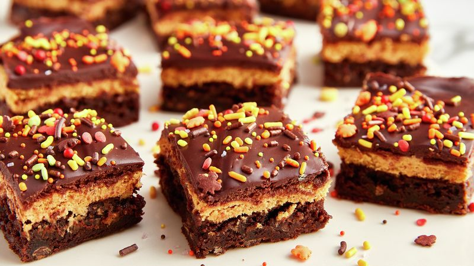
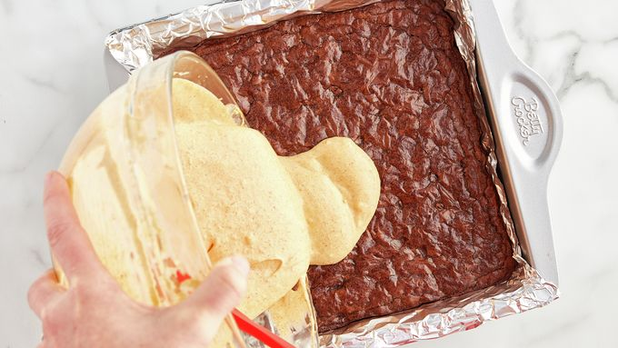
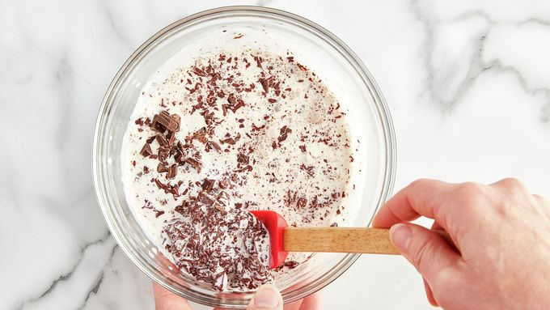
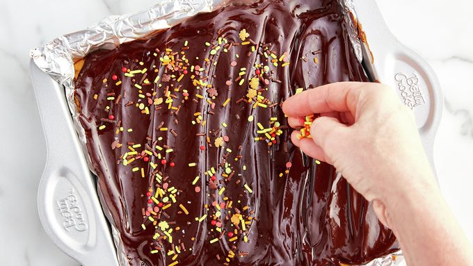

Pumpkin Cheesecake Fudge Brownies Recipe

A brownie that is sure to make your taste buds
happy dance!
These brownies feature a triple chunk brownie mix with a creamy cheesecake
layer on top. But it doesn't stop there! Next, they are covered with a rich
chocolate ganache and sprinkles!
INGREDIENTS:
- 1 box (17.8 oz) Betty Crocker™ Delights Supreme Triple Chunk Brownie Mix
Water, vegetable oil and egg called for on brownie mix box
- 1 package (8 oz) cream cheese, softened
- 1/2 cup canned pumpkin (not pumpkin pie mix)
- 1 egg
- 1/3 cup sugar
- 1 teaspoon ground cinnamon
- 1/4 teaspoon ground nutmeg
- 1/2 cup heavy whipping cream
- oz semisweet chocolate, chopped
- Betty Crocker™ Fusion Sprinkles Harvest Mix, as desired
STEPS:
- Heat oven to 350°F. Line 9-inch square pan with foil;
spray bottom and sides of foil with cooking spray.
Make brownie batter as directed on box. Spread in pan.
Bake brownies 24 to 26 minutes or until brownies are
set around sides and toothpick inserted in center
comes out almost clean. Cool 10 minutes.
- In medium bowl, beat cream cheese and pumpkin with
electric mixer on low speed until blended. Beat in
egg, sugar, cinnamon and nutmeg until well mixed.
Gently pour and spread evenly over slightly cooled
brownies.

- Bake 25 to 30 minutes or until edges of pumpkin
layer are set and center is nearly set. Cool
completely, about 1 hour 30 minutes.
- In medium microwavable bowl, microwave whipping
cream uncovered on High 50 to 70 seconds or
until hot but not boiling. Stir in chocolate
until mixture is smooth; let stand 5 minutes
to cool and thicken slightly.

- Spread ganache topping evenly over fully
cooled brownies in pan. Top with sprinkles.
Refrigerate uncovered until set, about 2 hours.
Using foil to lift, remove brownies from pan.
Cut into 4 rows by 4 rows. Store covered in
refrigerator.
